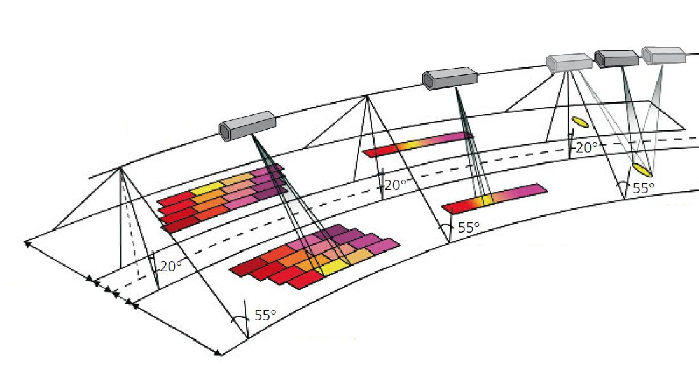
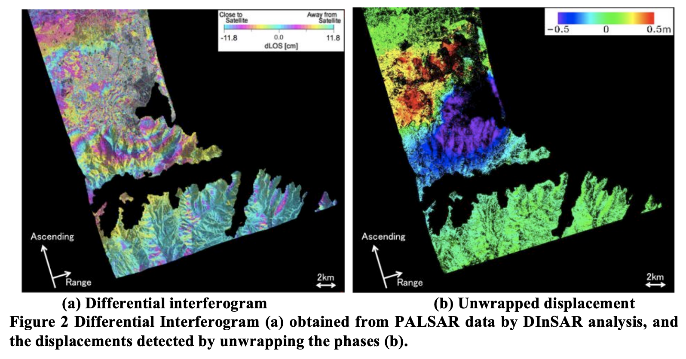

8 Synthetic Aperture Radar
8.1 Summary
Synthetic Aperture Radar (SAR) is an active type of sensor that sends a signal at a specific frequency to Earth’s surface and records the signal in that same frequency coming back. The choice of the frequency of course will determine what the sensor is able to identify. For example sea band radio waves (4-8 GHz) can be used for detecting ice or ocean maritime activity. This is why depending on the wavelength we are able to penetrate e.g. through the tree canopy, as well as clouds. Another advantage is that this can collect data at night, as sun’s energy is not utilised.
Aperture of the radar is of significance, as that determines the resolution of the collected data. This is controlled by the size of the antenna, and the longer the antenna the higher resolution we could collect. For that reason, this sensor utilises the movement of the satellite in orbit to “expand” the antenna, because it is continuously sending signal to Earth imaging the specific location from different points in orbit. Hence the name - synthetic aperture radar. The image below illustrates how this works.

Another notable aspect of SAR imagery is the polarisation of the signal. Different sensors will have different polarisation (either vertical or horizontal), which affects what materials are recorded. For example buildings and trees are most sensitive to sensor sending and receiving horizontal polarisations, while bare earth to vertical-vertical (VV). Therefore, for example it is of significance to capturing water’s surface, whether the imagery is collected on a windy or calm day, as rough water surface will reflect signal differently.
Backscatter or amplitude of the signal, as well as its phase are also of significance. Phase is when in the wave cycle the signal reaches the sensor (whether its at a peak or trough of the wave). This is the technique, which enables change detection with very high accuracy. This is calle Interferometric SAR (InSAR), which can be used for creating Digital Elevation Models (DEMs). Furthermore, Differential InSAR (DInSAR) can also be used for detecting change after earthquakes, landslides or other events that had an impact on the earth’s surface, but also buildings after for example bombings.
SAR imagery when catpured, of course also comes with lots of metadata, which is crucial to understand and analyse the imagery, for example it will matter whether the data was recorded on the south-to-north or north-to-south orbit pass. Moreover, SAR data will often be on a power scale, which necessitates the use of appropriate transformation methods. In practice, perhaps the most influential usecase of SAR data is for change detection, which is based on a ratio of the image after a change event to the image prior. There have been many ways developed for quantifying change, depending on the intended use case, such as inverted ratio which works in ways that gives changed pixels more importance.
9 Applications
The first study I wanted to note, used SAR data for detecting fault slip change after the 2011 earthquake in Christchurch, New Zealand (Liu et al. 2013). The authors utilise data from ALOS/PALSAR and TerraSAR-X (TSX) of the area before and after the earthquake, which enables the detection of ground movement and liquefied areas.

Another paper used SAR data for estimating urban density of buildings (Kajimoto and Susaki 2013). The issue that the authors address with their algorithm arises from the backscattering of signal from buildings in densely built-up urban areas The proposed methodology addresses the issue by adjusting the measurements to account for the polarisation orientation angle and normalising the data to correct for that.
9.1 Reflections
SAR seems like an incredible technology, which has a lot of applications in very important fields, like disaster response. I
TODO